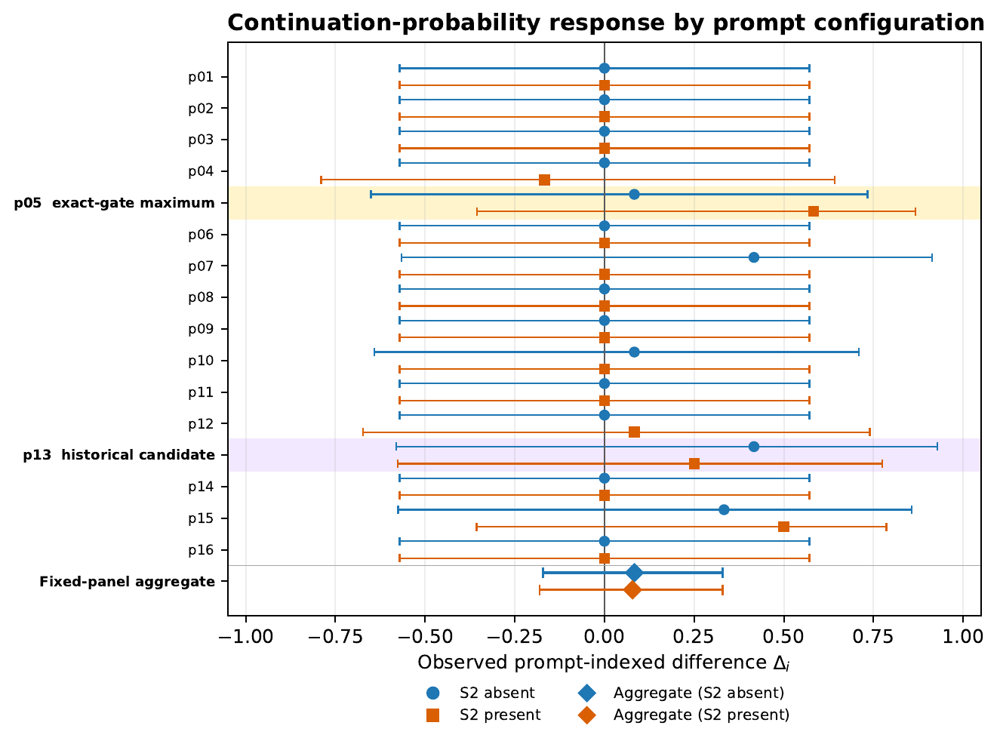

Register
Claims, prompts, thresholds, and execution rules were sealed before their adjudicating data.
Open computational behavioral science
Persona mixtures and imprecise treatment-response estimates in an LLM persona panel.
One fixed model-prompt panel. Protocol-nonmatched human references. No claim of human substitutability.
The panel passed. Three of four repeated-game condition means entered the preregistered broad-reference band.
The response remained loose. Conservative intervals span roughly −0.18 to +0.33.
The representation mattered. A single sentence operation moved behavior from one corner to the other.
What the paper shows
Sixteen sealed persona prompts were crossed with strategic-game conditions. The panel produced plausible aggregate levels and substantial cross-prompt dispersion, but the treatment-response object that the broad checks might be taken to validate was only loosely bounded.
Fixed-panel symmetric-Dirichlet sensitivities yield median between-prompt shares of 63%–71% under Jeffreys alpha=.5 and 47%–53% under alpha=1. Conditional plug-in estimates are higher, 85%–96%, because they treat observed boundary concentration more literally.
The treatment changed both the continuation process and the language communicating it. The paper therefore reports a represented-treatment response, not a pure incentive effect.
The historical P5-2 classification is preserved, but its Bayesian proximity to the 0.20 boundary is prior-dependent; the alpha=1 posterior median is 0.205 (95% interval [0.182, 0.231]) and crosses it. The prompt-cluster bootstrap remains the principal dependence-aware sensitivity.

Prompt-indexed response

Audit architecture
Claims, prompts, thresholds, and execution rules were sealed before their adjudicating data.
An event-sourced engine archived rendered prompts, completions, actions, payoffs, seeds, and provenance.
Mechanical predicates produced verdicts without hand-setting outcomes.
External review exposed family-error, dependence, construct, and boundary-uncertainty defects.
The public capsule verifies 4,916 confirmatory runs with no credentials or live model calls.
Historical records remain intact; revised interpretations travel beside them.
One-command verification
The capsule stages archived databases, verifies Phase 3 prompts and actions, replays Phase 4–5 byte-exact, independently recomputes deterministic baselines, then checks immutable inputs.
git clone https://github.com/yoheinakajima/synthetic-players
cd synthetic-players/capsule
bash verify.shExpected: 4,919 archived runs verified — 4,916 confirmatory + 3 legacy diagnostics.
Open materials